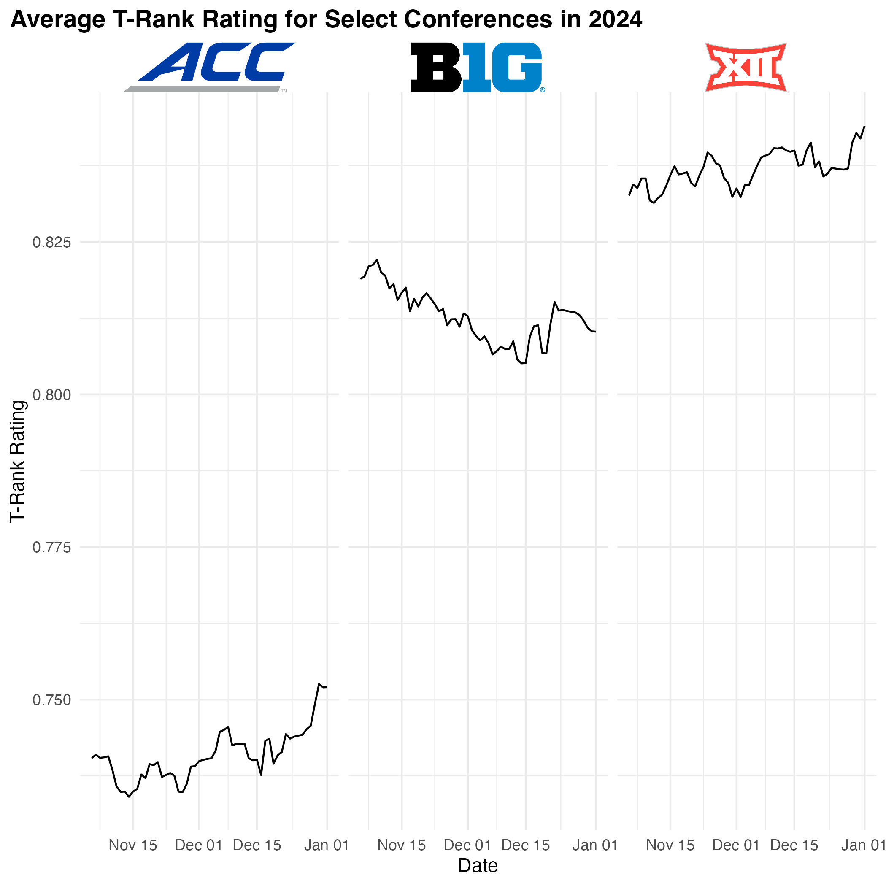
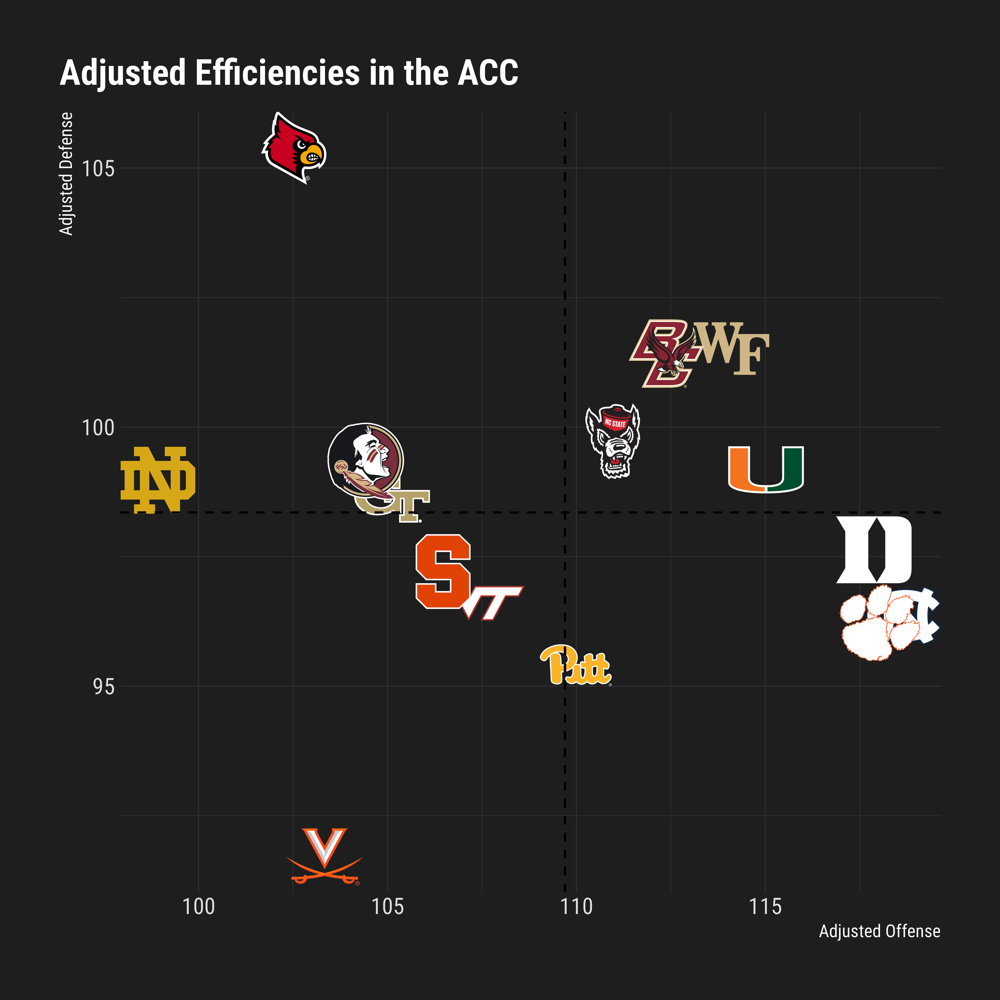

Welcome to cbbplotR, an R package designed to bring the vibrant world of college basketball into your data visualizations. This package, an extension of nflplotR, is your go-to toolkit for incorporating college basketball team and conference logos, player headshots, and team colors into ggplot2 plots. Tailored to work seamlessly with cbbdata, cbbplotR requires team and conference names that match those found in the cbbdata package. There is a limited internal name conversion function for teams and conferences that will match some common sites, but it is recommend to use cbbdata names. If you want to request adding specific name conversions, please open an issue on the package’s GitHub.
cbbplotR is an extension of the popular {sport}plotR family of packages, including nflplotR, nbaplotR, mlbplotR, and cfbplotR. This package was heavily adapted from nflplotR and ggpath from developer Sebastian Carl.
Installation
To get started with cbbplotR, you can install it using the pak package.
if (!require("pak")) install.packages("pak")
pak::pak("andreweatherman/cbbplotR")Features
Team logo plots
Visualize your data with style using cbbplotR’s team logo plots. These plots are not only visually appealing for social media but also intuitive and simple to create. The geom_cbb_teams function integrates team logos into your ggplot2 scatter plots, requiring a team aesthetic aligned with cbbdata.
cbbdata::cbd_torvik_ratings(year = 2024, conf = 'ACC') %>%
ggplot(aes(adj_d, adj_o, team = team)) +
geom_mean_lines(aes(x0 = adj_d, y0 = adj_o), color = 'black') +
geom_cbb_teams(width = 0.08) +
theme_minimal() +
theme(
plot.title = element_text(face = 'bold', size = 14),
plot.title.position = 'plot'
) +
labs(title = 'Adjusted Team Efficiencies in the ACC',
x = 'Adjusted defense',
y = 'Adjusted offense')Our plot also makes use of the geom_mean_lines function to draw reference lines that refer to the average values of each variable. (geom_median_lines is also available!) Both of these functions are pulled directly from the ggpath package.
Conference logo plots
In addition to plotting team logos, cbbplotR also allows for plotting conference logos. The functionality is analogous to that of geom_cbb_teams and requires a valid conference name to be passed through the conference aesthetic.
cbbdata::cbd_torvik_conf_factors(year = 2024) %>%
slice(1:10) %>%
ggplot(aes(adj_d, adj_o, conference = conf)) +
geom_mean_lines(aes(x0 = adj_d, y0 = adj_o), color = 'black') +
geom_cbb_conferences(width = 0.08) +
theme_minimal() +
theme(
plot.title = element_text(face = 'bold', size = 14),
plot.title.position = 'plot'
) +
labs(title = 'Adjusted Team Efficiencies in 2024 for Top 10 Conferences',
x = 'Adjusted defense',
y = 'Adjusted offense')Player Headshot Plots
With cbbplotR, you can also incorporate player headshots into your visualizations. Note: You’ll need to provide ESPN player IDs, which cbbplotR and cbbdata doesn’t automatically retrieve.
You can grab ESPN player IDs manually, or you can use this snippet to grab all player IDs for a given team:
# replace `150` with a teams' ESPN ID
jsonlite::fromJSON(glue::glue('http://site.api.espn.com/apis/site/v2/sports/basketball/mens-college-basketball/teams/{ESPN_TEAM_ID}/roster')) %>%
pluck('athletes') %>%
as_tibble() %>%
select(id, displayName)To plot player headshots, simply include a column of ESPN player IDs in your data and pass that column as a player_id aesthetic to geom_cbb_headshot.
set.seed(10)
ids <- jsonlite::fromJSON('http://site.api.espn.com/apis/site/v2/sports/basketball/mens-college-basketball/teams/150/roster') %>%
purrr::pluck('athletes') %>%
dplyr::as_tibble() %>%
dplyr::select(id, displayName)
random_data <- tibble(
val1 = rnorm(nrow(ids)),
val2 = rnorm(nrow(ids)),
id = ids$id
)
random_data %>%
ggplot(aes(val1, val2)) +
geom_cbb_headshots(aes(player_id = id, width = 0.1)) +
theme_minimal() +
theme(
plot.title = element_text(face = 'bold', size = 14),
plot.title.position = 'plot'
) +
labs(title = 'Random data to show plotting headshots')Highlighting Features in cbbplotR
There are a lot of Division 1 basketball teams, and drawing effective plots with hundreds of logos is challenging. One of the standout features of cbbplotR is its ability to highlight specific elements in your plots. This is particularly useful when dealing with a large number of logos or data points, but you want to draw attention to only a few key items. You can apply highlighting to teams, conferences, and players.
Highlighting in cbbplotR is designed to be both intuitive and flexible. You have several methods at your disposal:
Transparency Adjustment: By setting a low alpha level for all elements except the ones you wish to highlight, you can subtly bring forward the focus points while keeping the context in the background.
Grayscale Application: Another method involves converting all non-essential logos to grayscale, making the colored logos of your highlighted teams or conferences stand out vividly.
Implementation
Implementing these methods is straightforward. You can adjust your data manually, providing alpha and/or color values to certain teams, and pass those values to an aes layer – or you could let cbbplotR do the heavy lifting. Without needing to touch your own data, you can pass a vector of teams, conferences, or player IDs through the highlight_X argument of geom_cbb_X functions and specify a highlight type – alpha, color, or both.
For example, let’s assume that we want to highlight the four Tobacco Road teams but still show their position relative to the rest of the ACC.
cbbdata::cbd_torvik_ratings(year = 2024, conf = 'ACC') %>%
ggplot(aes(adj_d, adj_o, team = team)) +
geom_cbb_teams(highlight_teams = c('Duke', 'North Carolina', 'Wake Forest', 'North Carolina St.'),
width = 0.08, highlight_method = 'both') +
theme_minimal() +
theme(
plot.title = element_text(face = 'bold', size = 14),
plot.title.position = 'plot'
) +
labs(title = 'Adjusted Team Efficiencies in 2024 for Top 10 Conferences',
x = 'Adjusted defense',
y = 'Adjusted offense')In this example, we chose to highlight our teams by increasing the transparency and changing logos to grayscale for our non-selected teams. You can choose to do both, highlight_method = "both", or just one, highlight_method = "alpha" // highlight_method = "color".
The process is analogous for the other geom methods – but the argument names switch relative to the function (highlight_conferences and highlight_players).
Plotting in element_ Areas
cbbplotR extends the standard capabilities of ggplot2 by allowing you to place logos and headshots in various parts of your plot, such as in axes labels or inline with plot titles.
Logos in Axes
With element_cbb_teams, element_cbb_conferences, and element_cbb_headshots, you can replace traditional axis text with logos and headshots. This is particularly effective for plots where team identity is more recognizable or impactful than just names.
cbbdata::cbd_torvik_ratings(year = 2024, conf = 'ACC') %>%
ggplot(aes(team, adj_o)) +
geom_col() +
theme_minimal() +
theme(
plot.title = element_text(face = 'bold', size = 14),
plot.title.position = 'plot',
axis.text.x = element_cbb_teams(size = 1)
) +
labs(title = 'Adjusted Team Efficiencies in 2024 for Top 10 Conferences',
y = 'Adjusted offense',
x = NULL)This process is analogous for the other two element_cbb_X functions. You must correctly call the element_X function after the appropriate theme call -> i.e. axis.text.x and not the broader axis.text.
Logos in Facets
You can also place logos in facet titles with the element_cbb_X family of functions.
cbbdata::cbd_torvik_ratings_archive(year = 2024) %>%
summarize(avg_rating = mean(barthag), .by = c(conf, date)) %>%
filter(conf %in% c('ACC', 'B10', 'B12')) %>%
ggplot(aes(date, avg_rating)) +
geom_line() +
facet_wrap(~conf) +
theme_minimal() +
theme(
plot.title = element_text(face = 'bold', size = 14),
plot.title.position = 'plot',
strip.text.x = element_cbb_conferences(size = 1)
) +
labs(title = 'Average T-Rank Rating for Select Conferences in 2024',
x = 'Date',
y = 'T-Rank Rating')
Utilizing Colors and Fills in cbbplotR
cbbplotR provides powerful functionalities for incorporating team and conference colors into your ggplot2 visualizations. By using the scale_color/fill_cbb_X functions, you can easily map the aesthetic properties of your plots to the official colors of college basketball teams and conferences.
To make these functions work, simply assign color and/or fill properties in aes to your team or conference columns, and then add the appropriate scale function.
Using Scale Functions
The scale_color_cbb_teams and scale_fill_cbb_teams functions allow you to assign team-specific colors to various plot elements. The scale_color_cbb_conferences and scale_fill_cbb_conferences functions work in the same manner and allow you to assign conference-specific color values.
cbbdata::cbd_torvik_ratings(year = 2024, conf = 'ACC') %>%
ggplot(aes(team, adj_o, fill = team)) +
geom_col() +
scale_fill_cbb_teams() +
theme_minimal() +
theme(
plot.title = element_text(face = 'bold', size = 14),
plot.title.position = 'plot',
axis.text.x = element_cbb_teams(size = 1)
) +
labs(title = 'Adjusted Team Efficiencies in 2024 for Top 10 Conferences',
y = 'Adjusted offense',
x = NULL)Enhancing Titles with Logos in cbbplotR
cbbplotR ships with ggplot_cbb_logo_title and gt_cbb_logo_title functions to allow you to seamlessly incorporate team or conference logos into titles.
Adding Logos to ggplot2 Titles
The ggplot_cbb_logo_title function is designed to integrate logos directly into the titles of ggplot2 plots. This works by passing the logo as a plot.tag and setting the appropriate coordinates and position for it. You can adjust the position of the logo with the hjust and vjust arguments.
The function works for plotting team logos, conference logos, or player headshots. You must specify a type as one of type = c('team', 'conference', 'headshot').
cbbdata::cbd_torvik_ratings_archive(year = 2024, team = 'Duke') %>%
ggplot(aes(date, rank, color = team)) +
geom_line(linewidth = 1.2) +
scale_color_cbb_teams() +
theme_minimal() +
ggplot_cbb_logo_title('Duke', type = 'team', size = 1.8) +
theme(
plot.title = element_text(face = 'bold', size = 14),
plot.title.position = 'plot',
) +
labs(title = '2024 Duke T-Rank',
subtitle = "This is to show how to include a logo in-line with a title plot",
x = 'Date',
y = 'T-Rank')
Adding Logos in gt Table Titles
Similarly, gt_cbb_logo_title is a function tailored for use with gt tables to integrate logos directly into a table header. This function works by returning HTML code that is then wrapped in an HTML tag and passed to the tab_header(title) function. Like with ggplot_cbb_logo_title, you can specify whether you want to plot a team logo, conference logo, or player headshot in the type argument.
You can adjust the logo size with logo_height, and you can also adjust various things about the title itself, including X_font_size, X_font_weight, and X_lineheight for both title and subtitle. If you use a gt table theme, or change the font later in the table, those changes will propogate in the title too. If you want to plot a custom image, perhaps a retro logo, you can specify a link to the image with logo_link (this will override any value or type).
title <- gt_cbb_logo_title(
title = 'ACC Adjusted Team Efficiencies',
subtitle = 'A random gt table to show off logo capabilities',
value = 'ACC',
type = 'conference',
logo_height = 30
)
cbbdata::cbd_torvik_ratings(year = 2024, conf = 'ACC') %>%
select(team, adj_o, adj_d) %>%
cbbdata::cbd_gt_logos(team, team) %>%
gt() %>%
fmt_markdown(team) %>%
tab_header(title = html(title))My Plots pane in RStudio is slow!
If you are plotting numerous team logos, you might notice that RStudio can be slow to return the plot itself – which can possibly lead to your R session aborting. To fix this, cbbplotR borrows a function from the ggpath package called ggpreview – which saves a temporary image of your plot and returns it in the Viewer pane. It is recommend to then expand that window in your browser.
To use ggpreview, you need to store your plot as a variable and then pass it to the ggpreview function. The function also takes arguments for plot dimensions.
For example, if we were to draw a plot showing every team’s adjusted efficiencies, that would require rendering 362 logos, which would definitely cause us some problems. But with ggpreview, we can store our plot as a variable and view a temporary image of it! This entire process takes fewer than 10 seconds.
p <- cbbdata::cbd_torvik_ratings(year = 2024) %>%
ggplot(aes(adj_d, adj_o, team = team)) +
geom_mean_lines(aes(x0 = adj_d, y0 = adj_o), color = 'black') +
geom_cbb_teams(width = 0.03) +
theme_minimal() +
theme(
plot.title = element_text(face = 'bold', size = 14),
plot.title.position = 'plot'
) +
labs(title = 'Adjusted Team Efficiencies',
x = 'Adjusted defense',
y = 'Adjusted offense')
ggpreview(p)Support
If you have feature recommendations or run into bugs, please open an issue on GitHub. You can also contact me directly on Twitter, but I would prefer the latter.
If you are looking for more college basketball R packages, check out cbbdata – also developed and maintained by me.